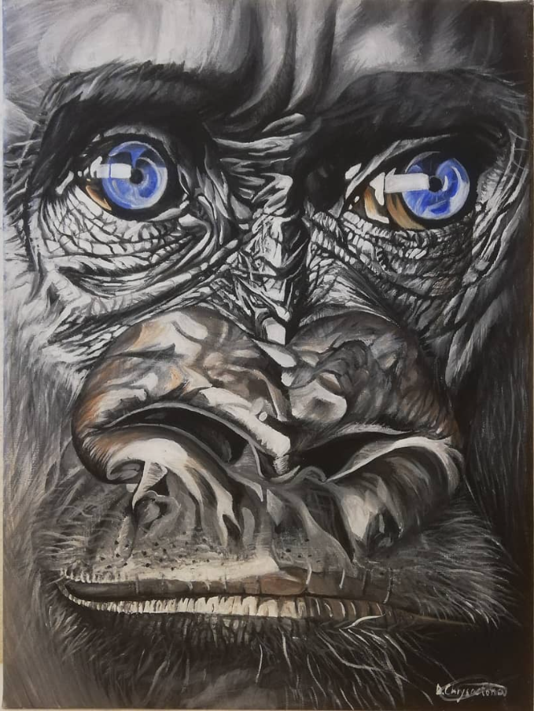
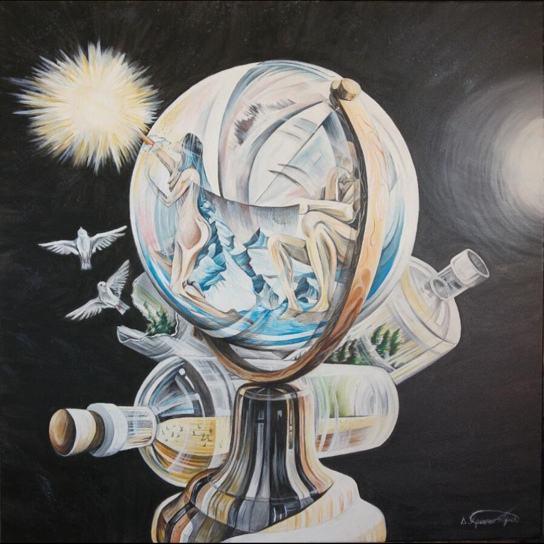
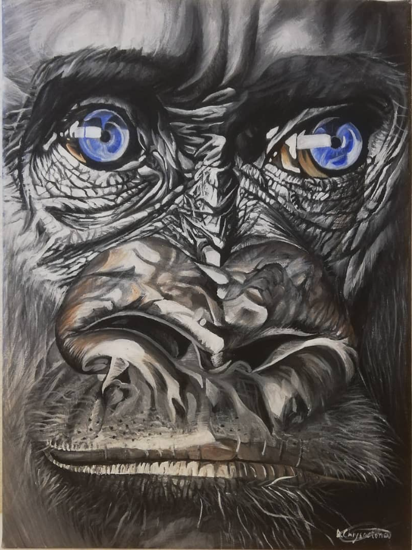
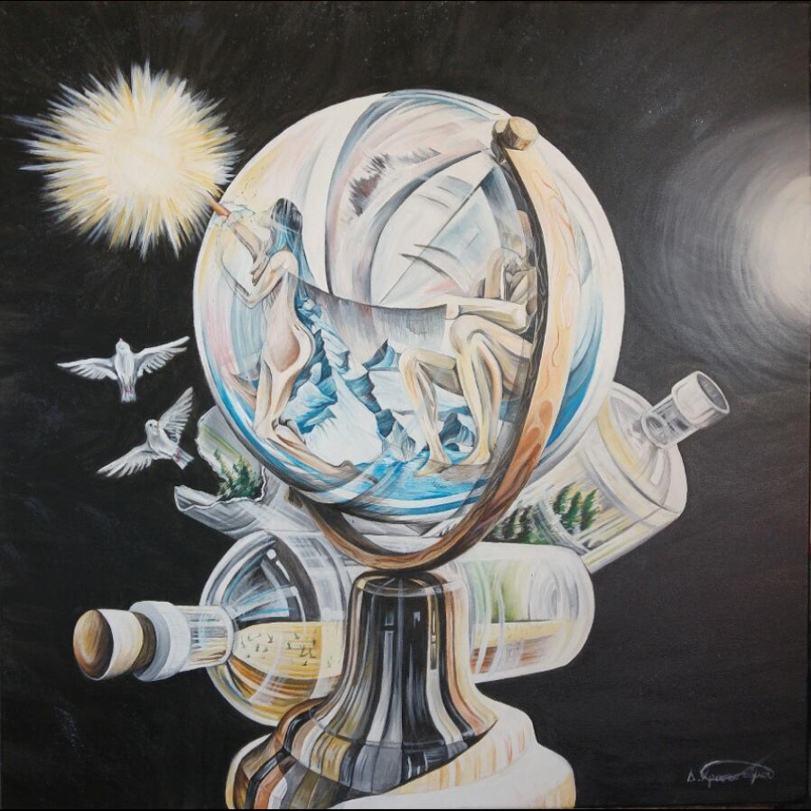

Demetris Chrysostomou
Researcher in AI for Power Systems · AI Energy Lab, TU Delft · MegaMind Project
Contact
Email: dchrys01@outlook.com
Links

 Download CV
Download CV
Research
My research is centered on developing machine learning methods that are robust, efficient, and trustworthy for use in critical real-world systems, particularly energy systems. As a PhD candidate at TU Delft in my final months, I have worked at the intersection of AI, optimization, and physical systems, contributing new algorithms that integrate data-driven learning with domain knowledge to improve reliability, generalization, and interpretability. With a background in Electrical Engineering (BSc, UCY) and Robotics Systems and Control (MSc, ETH Zurich), I bring a strong foundation in machine learning and optimization which I have deepened and expanded through my PhD in Machine Learning for Power Systems at TU Delft. My research integrates data-driven and model-based approaches to improve decision-making in complex, safety-critical systems.Publications
Journal Papers:
- Selection for Flexibility Areas using Probabilistic Machine Learning Under Measurement Uncertainty, Under Review, 2025.
- Machine Learning-based Method to Support TSO-DSO Adaptive Coordination with Active Power Management for Instability Prevention, Under Review, 2025.
- TensorConvolutionPlus: A Python package for distribution system flexibility area estimation, in SoftwareX, 2025.
- Tensor Convolution-Based Aggregated Flexibility Estimation in Active Distribution Systems, in IEEE Transactions on Smart Grid, Jan. 2025.
- A Novel Machine Learning-Based Load-Adaptive Power Supply System for Improved Energy Efficiency in Datacenters, in IEEE Access. Dec. 2021.
- Impact of inverter-based generation on islanding detection schemes in distribution networks, in Electric Power Systems Research, 2021.
- Short-term electromagnetic interference on a buried gas pipeline caused by critical fault events of a wind park, in IEEE Transactions on Industry Applications, 2020.
Conference Paper:
-
Exploring operational flexibility of active distribution networks with low observability, in IEEE Belgrade PowerTech, 2023.
Conference Presentations:
- Tensor Convolution-Based Aggregated Flexibility Estimation in Active Distribution Systems, in IEEE PES General Meeting, Austin, Texas, USA, July. 2025.
- Exploring operational flexibility of active distribution networks with low observability, in IEEE Belgrade PowerTech, Belgrade, Serbia, 2023.
- Impact of inverter-based generation on islanding detection schemes in distribution networks, in Power Systems Computational Conference (PSCC), Porto, Portugal, July. 2020.
MegaMind Project – Research Track 10
As part of the NWO-funded MegaMind project, I serve as the lead researcher from TU Delft in Research Track 10 (RT10). This track focuses on the development of data-driven and AI-based methodologies to support real-time coordination between transmission system operators (TSOs) and distribution system operators (DSOs). My research aims to enhance grid stability, resilience, and flexibility by integrating machine learning into operational decision-making. Through close collaboration with academic and industrial partners—including TNO, TenneT, Stedin, and IBM—we explore how intelligent algorithms can enable secure and adaptive control strategies for future-proof energy systems.
Project Deliverables:
- Stability performance of future integrated DSO-TSO systems Report, 2025.
- Future scenarios and research boundaries Report, 2023.
- Generic power system model in Digsilent PowerFactory, 2023.
Teaching
As an aspiring academic with a strong interest in both research and education, I view teaching not only as a responsibility but also as a powerful opportunity to shape future scientists and engineers. My goal is to create engaging, inclusive, and application-driven learning environments that equip students with both theoretical depth and practical intuition. During my PhD, I contributed to teaching material development, workshops, and thesis supervision in the Intelligent Electrical Power Grids group of TU Delft. These experiences have equipped me with both didactic and interpersonal skills to engage students from diverse academic backgrounds.
Thesis Supervision:
-
A. Neagu, “Data-Driven Adaptive Dynamic Equivalent of Active Distribution Networks.”, 2023.
Courses & Workshops:
- Teacher Assistant on the “Intelligent Electrical Power Grids” MSc Course at TU Delft, 2022, 2023.
- Energy Expert at PWC “Data Analytics” Workshop in Amsterdam, the Netherlands, 2022.
- Workshop Tutor for “Graph Neural Networks in Power Systems” in AIT, Vienna, Austria, 2023.
- Workshop Tutor for “Best Coding Practices” for the AI Energy Lab at TU Delft, the Netherlands, 2023.
Art & Paintings
Outside of my research, I enjoy painting and have hosted two personal exhibitions. Here are a few of my works:
 


